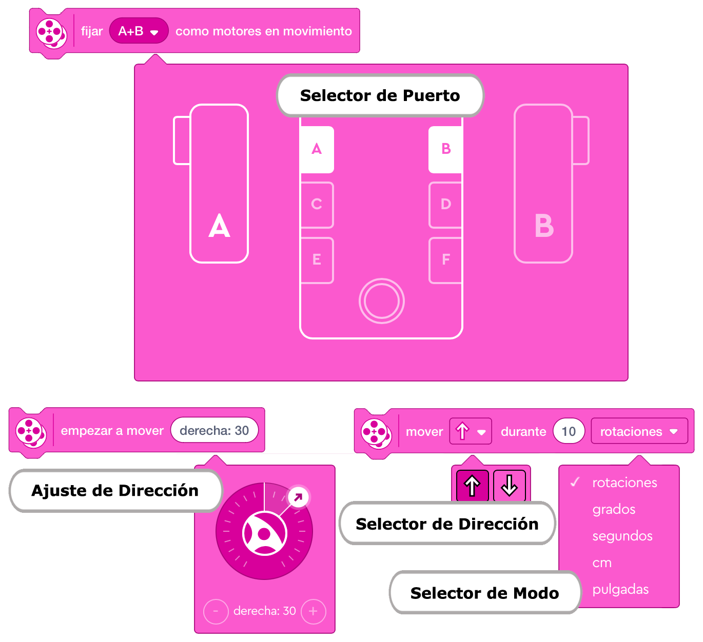
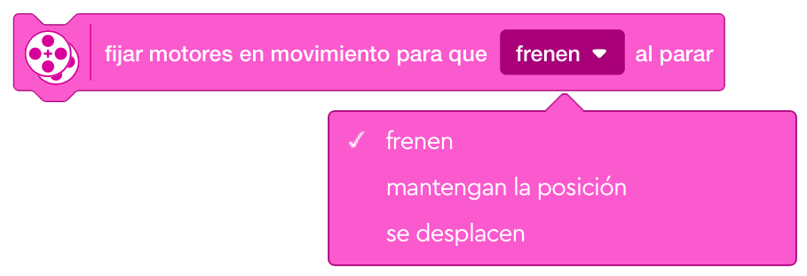

Los bloques de movimiento te permiten hacer funcionar dos motores en un movimiento sincronizado. Se utilizan
principalmente para mover las bases de conducción o bases motrices. Solo motores del mismo tipo, por ejemplo
dos motores medianos, se pueden sincronizar.
Son los de la segunda categoría en la paleta de bloques que tienen un código de color rosa.
En la categoría de bloques de movimiento hay un total de 7 bloques de pila.
Selector de puerto:
Utiliza el selector de puertos para seleccionar los motores base/de conducción que deseas controlar
con los bloques de movimiento. Puedes seleccionar los motores presionando sus letras.
Selector de dirección:
Utiliza el selector de dirección para elegir cómo deben de moverse los motores. Puedes elegir entre
conducir hacia adelante o hacia atrás.
Selector de modo:
Utiliza el selector de modo para elegir cómo funcionarán los motores de conducción. Tiene cinco modos:
rotaciones, grados, segundos, centímetros o pulgadas. En unas ocasiones solo aparecerán rotaciones, grados
y segundos, en otras ocasiones centímetros o pulgadas y en otras, las cinco.
Ajuste de la dirección:
Utiliza la herramienta de ajuste de la dirección para ajustar la dirección de la base de conducción.
Los valores de la dirección oscilan entre (-100 y 100). Uutiliza un valor de "0" para conducir hacia adelante
sin dirección.
El uso de los valores 100 y - 100 hará que la base de conducción gire sobre sí misma.

Nota importante: Para operar los bloques de movimiento, primero debemos identificar los motores de movimiento utilizando el selector de puerto en el bloque de motores de movimiento. También se puede agregar un bloque de velocidad de movimiento para elegir la velocidad de los motores. Si no se definió la velocidad, los motores funcionarán a la velocidad predeterminada (75%).
Este bloque mueve la base de conducción hacia adelante o hacia atrás durante un número específico de
centímetros, pulgadas, segundos, grados o rotaciones.
Antes de agregar este bloque, primero debe definir los motores base de conducción utilizando el bloque
"Fijar Motores de Movimiento". Los puertos predeterminados son B (izquierda) y C (derecha).
La velocidad de los motores se establece mediante el bloque de "Establecer Velocidad de Movimiento". La
velocidad predeterminada es del 75%.
Utilizaremos el selector de dirección para elegir cómo si los los motores de la base de conducción se mueven
hacia adelante o hacia atrás, y desde el selector de modo seleccione el modo con el que desea que funcionen
los motores.

Empieza a mover un modelo hacia adelante o hacia atrás hasta que se indica a los motores que hagan otra
cosa o el programa se detenga.
Antes de agregar este bloque, primero debe definir los motores base de conducción utilizando el bloque
"Fijar Motores de Movimiento". Los puertos predeterminados son B (izquierda) y C (derecha).
La velocidad de los motores se establece mediante el bloque de "Establecer Velocidad de Movimiento". La
velocidad predeterminada es del 75%.
Utilizaremos el selector de dirección para elegir cómo se desea que se muevan los motores de la base de
conducción.

Este bloque mueve la base de conducción hacia en la dirección seleccionada con una dirección ajustada
durante un número específico de rotaciones, grados o segundos.
Antes de agregar este bloque, primero debe definir los motores base de conducción utilizando el bloque
"Fijar Motores de Movimiento". Los puertos predeterminados son B (izquierda) y C (derecha).
La velocidad de los motores se establece mediante el bloque de "Establecer Velocidad de Movimiento". La
velocidad predeterminada es del 75%.
Utilizaremos el selector de dirección para elegir cómo se desea que se muevan los motores de la base de
conducción, y desde el selector de modo seleccione el modo con el que desea que funcionen los motores.

Este bloque empieza a mover los motores de conducción hacia la dirección seleccionada para siempre, hasta
que se indica a los motores que hagan otra cosa o el programa se detenga.
Antes de agregar este bloque, primero debe definir los motores base de conducción utilizando el bloque
"Fijar Motores de Movimiento". Los puertos predeterminados son B (izquierda) y C (derecha).
La velocidad de los motores se establece mediante el bloque de "Establecer Velocidad de Movimiento". La
velocidad predeterminada es del 75%.
Utilizaremos el selector de dirección para elegir cómo se desea que se muevan los motores de la base de
conducción.
Elegir valores de dirección altos como (+99 o -99) hará que la trayectoria de arco de la base de conducción
sea más nítida. Usa un valor de (0) para conducir en línea recta. El uso de los valores extremos 100 y -100
hará que la base de conducción gire sobre sí misma.

Este bloque detiene todo el movimiento de la base motríz apagando los motores de conducción.
Este bloque establece la velocidad de los motores de conducción. El rango de velocidad es de -100 a 100.
Los valores negativos invertirán la dirección del movimiento.
El valor predeterminado es 75%.
Este bloque define los dos motores de la base de conducción conectados en el hub.
Utiliza el selector de puertos para elegir entre los puertos A-F los motores de accionamiento.

Este bloque calibra la distancia de los motores de conducción para que la unidad de distancia especificada
en los bloques de movimiento sea precisa.
Este bloque generalmente se coloca antes de los bloques de conducción con el bloque "Establecer Motores de
Movimiento" que define los motores de la base de conducción, y el "Establecer Velocidad de Movimiento" que
configura la velocidad de conducción de los motores.
Utiliza el selector de modo para elegir cómo sería la rotación del motor, en cm o pulgadas.
Se podrían añadir más bloques de movimiento a la paleta de bloques añadiendo la extensión "Más Movimiento"
de la biblioteca de extensiones. Esta extensión incluye 3 bloques de movimiento más, todos ellos de pila.
Para acceder a la biblioteca de extensiones, presiona el botón de extensiones, debajo de las categorías de
bloques. Luego aparecerá una nueva categoría de bloques al final de la paleta de bloques con el nombre "Más
Movimiento".
Este bloque comienza a mover los motores de conducción para siempre a la velocidad que se ha especificado para cada motor. El primer campo de entrada es para el motor izquierdo, y el segundo es para el derecho.

Este bloque determina cómo se detendrán los motores de la base de conducción después de terminar un bloque de movimiento con una duración especificada utilizando tres modos: freno, mantener la posición o desplazamiento

Este bloque determina cómo acelerarán al iniciar el movimiento, utilizando tres formas: lenta, media o rápida.